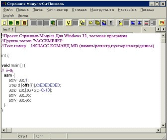
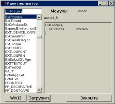

Компилятор “Странник” freeware.
Пару месяцев назад я получил письмо от адресата из Соединенных Штатов. Он только что познакомился с компилятором и написал следующее:
Your compiler is wonderful, … The only problem is that I can not read the HELP FILE, is there a copy somewhere that is in ENGLISH.
Я, разумеется, обнадежил его сообщением, что вскоре искомый HELP будет переведен на английский, но про себя подумал, что наши американские друзья, пожалуй, несколько избалованы мировым компьютерным сообществом и привыкли читать документацию только на родном языке.
Для разнообразия проект “Странник Модула-Си-Паскаль” полностью русскоязычен. Интерфейс пользователя, языки программирования, демонстрационные примеры, документация даже сами исходные тексты компилятора написаны на русском языке. Ниже рассказано о применяемых языках программирования, интегрированной среде и некоторых секретах компиляции (внутреннняя структура компилятора и генерируемого им exe-файла).
1.Языки программирования.
В настоящее время компилятор поддерживает три языка программирования – Модула-2 (Оберон-2), Паскаль и Си (Си++). Все языки программирования компилятора “Странник” имеют общую семантическую базу (одинаковый набор операторов, базовых и производных типов, одинаковый механизм процедур и модулей). Более подробно о языках с общей семантической базой можно прочитать в статьях автора в Мире ПК (“Современные языки программирования – результаты эволюции”, N3 за 2001) и Программисте (“Сравнение языков программирования Си++, Паскаль и Ада”, N2 за 2002 год). Кратко можно сказать, что при приведении каждого языка к общей семантической базе языки были частично сокращены, частично расширены. Ниже приведен список конструкций, присутствующих во всех языках программирования компилятора.
Операторы:
1.Оператор присваивания
2.Оператор вызова процедуры (функции)
3.Условный оператор (if)
4.Оператор выбора (case, swith)
5.Цикл с параметром (for)
6.Цикл с предусловием (while)
7.Цикл с постусловием (repeat, while do)
8.Оператор инкремента/декремента (inc,dec,++,--)
9.Оператор выхода из процедуры/функции (return,exit)
10.Оператор присоединения (with)
11.Встроенный ассемблер (asm)
Простые типы данных:
1.Целые размером 1 байт (byte), 2 байта (word), 4 байта (integer, cardinal, int, dword, uint)
2.Символ (char)
3.Логический (boolean,bool)
4.Универсальный указатель (address,void*)
5.Указатель на строку символов (pstr,char*)
6.Строка символов (string,char[])
7.Числа с плавающей точкой размером 32 бита (real32,float32) и 64 бита (real,float)
8.Множество размером 32 байта (setbyte)
Составные типы данных:
1.Массивы
2.Записи (структуры), в том числе с вариантной частью
3.Указатели
4.Скалярные типы (enum)
5.Тип множество
6.Классы и объекты
Процедуры (функции) и модули.
Механизм процедур более или менее идентичен во всех языках программирования и не подвергся какой-либо переделке. При создании механизма модулей использовалась модель Си (и Модулы), когда интерфейс модулей содержится в отдельном файле (h-файл в Си и d-файл в Модуле). В то же время было принято решение отказаться от практики Си, при которой импорт модуля осуществляется механическим включением файла заголовка (h-файла) в текст программы. Это приводит к необходимости все время перекомпилировать файлы заголовков, и, как следствие, к большим затратам времени на компиляцию. Вместо этого использована модель Модулы, когда файлы заголовков компилируются в специальные интерфейсные файлы (i-файлы), которые затем могут импортироваться даже при отсутствии самого файла заголовка.
Классы и объекты.
Механизм объектно-ориентированного программирования в современных языках программирования в настоящее время можно считать устоявшимся. В качестве внешних атрибутов механизма ООП были использованы языки Оберон-2 (для Модулы), Objective Pascal для Паскаля и Си++ (для Си). Во всех языках программирования заголовки методов (но не тела) можно включать в описание класса. Тела методов описываются вне класса. Поля и методы могут иметь два уровня инкапсуляции – private и public. Квалификатор protected в Си++ допустим, но эквивалентен public. Квалификатор “-“ (экспорт только для чтения) в Оберон-2 допустим, но эквивалентен public-описанию. Все методы являются виртуальными, использование квалификатора virtual в Си++ и Паскале допустимо, но компилятором игнорируется. Шаблоны классов, дружественные методы и множественное наследование в Си++ не реализованы. Переопределяемые методы должны иметь идентичный набор параметров. Перегрузка имен методов (наличие двух методов с одинаковым именем, но разным набором параметров) не допускается.
При приведении Модулы-2 к общей семантической базе были исключены некоторые редко используемые и отсутствующие в Си конструкции, вроде цикла LOOP, а так же несколько упрощен механизм модулей и раздельной компиляции (следует напомнить, что в Си он вообще отсутствует на уровне языка).
Кроме того, была проведена унификация лексических основ языков, скорректированная в сторону Си (например, способы задания символьных, строковых или шестнадцатеричных констант взяты из Си). Помимо соображений общности языков этому способствовала идеология построения Win32, основанная на понятиях Си.
В поставке компилятора так же отсутствуют стандартные библиотечные модули Модулы, такие как InOut или System. Предполагается, что программист будет использовать для целей ввода-вывода или операций с файлами функции Win32.
При реализации классов и объектов за основу взяты механизмы языка Оберон-2, ставшего фактическим стандартом реализации ООП в Модуле. При этом оператор WITH сохранил свою семантику (т.е. по-прежнему предназначен для работы с записями, а не для проверки типа объекта). Поскольку Модула-2 мощнее Оберон-2 во всем, что не касается ООП, название языка сохранено, хотя реализацию Модулы-2 в Страннике можно смело считать надмножеством языка Оберон-2.
В версию языка Си компилятора Странник были внесены некоторые изменения, связанные с приведением семантической базы языка в соответствие с семантикой языка Модула-2. При этом на стандартные конструкции Си были наложены некоторые ограничения. Так, например, нельзя использовать операции ++ и - внутри выражения; ограничено применение директивы define. Наряду с ограничениями, в Си были введены некоторые дополнительные конструкции: типы bool, enum и set, elsif часть в операторе if, модернизирован оператор выбора switch и другое.
Классы и объекты реализованы на основе механизмов Си++.
Все изменения, внесенные в язык, были сделаны с максимальным вниманием к сохранению идеологии языка; как правило, конструкции эти брались из родственных Си языков (таких, как Си++ и Ява).
Рис.2 Фрагмент демонстрационного примера на Си++
При разработке версии языка Паскаль для компилятора Странник главной целью разработчика была унификация семантических конструкций языка с другими языками проекта Модулой и Си. В связи с близкой родственной связью Паскаля с Модулой, модификация Паскаля не была существенной. Главное изменение в семантике языковых конструкций связано с механизмом выхода из функции. В Модуле и Си используется вариант оператора return, при использовании которого выход из функции происходит сразу, в этом же месте кода, и дальнейшие операторы не исполняются. В Паскале выход из функции возможен только в конце кода функции, а результирующее значение можно присваивать, как в обычном операторе присваивания. В Паскале для компилятора Странник был использован вариант return, аналогичный Модуле и Си. При этом внешний вид присваивания сохранен в паскалевском варианте, однако последующие операторы не исполняются, а происходит выход из функции.
В случаях, когда классический Паскаль не содержал необходимых конструкций, предпочтение отдавалось вариантам этих конструкций из Borland Pascal. Так, заголовок модуля в Паскале для Странника выглядит как UNIT ИмяМодуля ,список импортируемых модулей, как USES СписокМодулей, а оператор выхода из процедуры как EXIT.
Базовые типы данных (byte, char, word, integer, address) в основном идентичны типам данных Модулы. Единственное отличие - вместо типа cardinal введен тип dword
.
Рис.3 Фрагмент демонстрационного примера на Паскале
Инструкции ассемблера Странника записываются в плавающем формате (допустима запись нескольких инструкций в одной строке). Разделителем является точка с запятой. Комментарии можно записывать после двух знаков косая черта (комментарий в стиле Си++).
Признак размера операнда можно указывать после мнемоники команды. Допустимы следующие варианты размера: “b” или “byte” (байт), “w” или “word” (слово),“d” или “dword” (двойное слово) и “q” или “qword” (четырехсловный операнд).
При задании операнда в памяти можно использовать имена переменных или параметров процедур с указанием ключевого слова offs.
Встроенный ассемблер Странника позволяет работать с сопроцессором Intel. Однако команды работы с сопроцессором работают только с данными определенного размера, а именно:
- команды работы с целыми числами: 4-байтное целое
- команды работы с вещественными числами: 4 или 8-байтное вещественное
- команды работы с двоично-десятичными числами 10 байтное число
В связи с этим указание размера операнда в командах работы с плавающей точкой не допускается, за исключением операций работы с вещественными числами (при работе с 32-бит числами следует указывать размер “d” или “dword”, а для 64-битных чисел: “q” или “qword”; по умолчанию применяется команда работы с 64-бит числами).
Ассемблер Странника позволяет вставлять в код непосредственные операнды, задаваемые с помощью шестнадцатеричных или десятичных целых чисел.

Рис.4 Встроенный ассемблер в Си
Набор демонстрационных примеров компилятора делится на две группы. Первая предназначена для демонстрации возможностей компилятора, вторая – для демонстрации применения стандартных элементов интерфейса Wn32. Каждый пример представляет из себя самостоятельную программу, состоящую из одного файла объемом не более 200 строк (как правило, значительно меньше). Каждый демонстрационный пример размножен в шести экземплярах – три на русском (Модула, Си и Паскаль) и три на английском языке.
Первая группа примеров состоит из следующих программ:
Demo1_1 - простейшая программа (hello, word)
Demo1_2 - простейшая программа с окном
Demo1_3 - простейшая программа с окном и меню
Demo1_4 - текстовый редактор ascii-файлов
Demo1_5 - текстовый редактор rtf-файлов
Demo1_6 - использование графических процедур GDI
Demo1_7 - работа с эмулятором ДОС-терминала
Demo1_8 - генератор случайных чисел
Demo1_9 - получение командной строки программы
Demo1_10 – Игра “теннис” (применение ООП)
Вторая группа примеров:
Demo2_1 - работа с деревьями (стандартный класс Treeview)
Demo2_2 - работа со списком (стандартный класс Listview)
Demo2_3 - индикатор progressbar
Demo2_4 - индикатор trackbar
Demo2_5 - проигрыватель avi-файлов
Demo2_6 - стандартный диалог выбора файла
Demo2_7 - кнопки Up=Down
Demo2_8 - Конструктор WIZARD (каркас программы инсталляции)
Demo2_9 - Диалог параметров (стандартный класс Options)
Рис.5 Демонстрационный пример “Hello, world” на Си
Размер генерируемого EXE-файла – 4 Кб.
Дистрибутив компилятора состоит из трех частей. В первую часть входит сам компилятор и набор демонстрационных программ (объем в zip-архиве около 600 Кб). Вторая часть дистрибутива – исходные тексты компилятора на Модуле (объем около 300 Кб). В третью часть дистрибутива входит комплект альфа-тестов компилятора (многие из которых могут также служить демонстрационными примерами). Объем третей части дистрибутива около 100 Кб, он содержит около 100 тестов на каждом из языков программирования, поддерживаемых компилятором.
Компилятор поставляется в виде обычных (не саморазархивирующихся) ZIP-архивов, не имеет программы установки и не требует внесения каких-либо записей в реестр Windows.
Получить компилятор можно с сайта автора по адресу home.perm.ru/~strannik или с сайта www.download.ru.
2.Интегрированная среда.
Основой интегрированной среды компилятора служит ситаксис-ориентированный редактор программ. Отдельные элементы текста (ключевые слова, комментарии, константы и т.д.) выделяются цветом и шрифтовым оформлением. Для работы с проектами, состоящими из нескольких модулей (файлов), существует два набора закладок. Первый набор отображает имена загруженных в интегрированную среду модулей (файлов) и используется для перехода от одного файла к другому. Во втором наборе всегда находятся две закладки: для файла – заголовка модуля (h-файл в Си, d-файл в Модуле или def-файл в Паскале); и для файла – тела модуля (c-файл в Си, m-файл в Модуле или pas-файл в Паскале). Такая конструкция исключает перегруженность традиционного многооконного интерфейса, когда для каждого файла (будь то файл заголовка или файл тела модуля) открывалось отдельное окно.
В статус - строке компилятора помимо информации и текущей строке и столбце находится информационная строка, показывающая параметры процедуры (функции), над которой расположен курсор, значение константы или другую текущую информацию.
Текстовый редактор содержит механизм “отката” (отмены внесенных изменений).
Рис.6 Интегрированная среда в момент выдачи сообщения об ошибке
Редактор диалогов
Диалог (dialog) – стандартный термин Win32, обозначающий окно с содержащими его элементами, такими как кнопки, списки, однострочные редакторы и другие элементы интерфейса. В Дельфи аналогичные объекты называются “Формы”. Диалог состоит из двух компонент – собственно диалога и диалоговой функции, описывающей реакцию программы на действия пользователя. Для создания и редактирования диалога предназначен встроенный редактор диалогов.
В центре окна редактора диалогов расположено изображение диалога со всеми элементами, а в нижней части характеристики текущего элемента: текст, класс, идентификатор, размеры и координаты.
Переключение с одного элемента на другой, изменение их размеров и местоположения можно производить с помощью мыши.
С помощью меню редактора диалогов можно добавлять новые элементы в диалог (строки, кнопки, редакторы, списки и другие). При выборе соответствующего пункта меню редактор создаст новый элемент со стандартным для данного класса набором стилей.
Редактор диалогов позволяет выделять и манипулировать группами элементов. С выделенными элементами можно работать с помощью меню Правка (копирование, вставка и удаление группы элементов) и меню Выравнивание (выравнивание группы элементов по левому и правому краю, по верху и низу, а так же выравнивание размеров элементов по горизонтали и вертикали).
Наиболее часто употребляемые пункты меню дублированы в линейке инструментов соответствующими кнопками.
После закрытия редактора диалогов редактируемый диалог будет вставлен в текст программы или в clipboard.
Помимо самого диалога Редактор диалогов позволяет генерировать диалоговую функцию этого диалога, а так же вызов диалога в тексте программы.
Настройки редактора диалогов позволяют дополнять список стандартных элементов, которые можно вставлять в диалог, работая с редактором диалогов.
Рис.7 Редактор диалогов
Рис.8 Настройки редактора диалогов (классТекст)
Компилятор содержит встроенный отладчик, позволяющий контролировать исполнение отлаживаемой программы, приостанавливать ее исполнение и наблюдать значения глобальных и локальных переменных.
Существует четыре варианта запуска программы под отладчиком:
“Запустить под отладчиком”, “Следующий шаг”, “Следующий шаг (без входа в процедуру)” и “Перейти в текущую строку”. В трех первых случаях программа будет остановлена на первой строке исполняемого кода; в последнем - в строке, в которой находился курсор в момент запуска отладчика. В статус - строке компилятора появится надпись “Отладка” или “Ожидание”. Надпись “Ожидание” означает, что компилятор ожидает от отлаживаемой программы достижения точки останова. “Отладка” означает, что точка останова достигнута и управление передано компилятору. В этот момент можно смотреть значения локальных и глобальных переменных, запустить программу далее или прервать отладку.
Компилятор информирует о достижении точки останова миганием заголовка окна.
Компилятор позволяет во время остановки программы просматривать значения глобальных и локальных переменных. Для этого предназначено диалоговое окно, в левой части которого присутствуют два списка: глобальных и локальных переменных. Если выбрать какое-либо имя одного из этих списков, в правой части окна появится значение этой переменной. Если переменная является массивом (структурой, записью) или комбинацией этих конструкций, можно использовать окно доступа (в левой верхней части диалога) для доступа к компонентам этой переменной.
Следует отметить, что Странник не вставляет никакой отладочной информации в exe-файл, а использует информацию последней компиляции, поэтому перед запуском отладчика программа всегда компилируется.
Рис.9 Диалог просмотра значений переменных
Вверху – список глобальных переменных, внизу – локальные переменные и параметры процедуры
Компилятор обеспечивает информацией о любом идентификаторе программы при использовании системы контекстной подсказки. Для получения контекстной подсказки необходимо установить курсор на интересующий идентификатор и нажать Ctrl+F1 или кнопку со знаком вопроса, после чего откроется окно справки.
В верхней части окна содержится искомый идентификатор, непосредственно под ним расположен алфавитный список всех идентификаторов, используемых в программе, включая все импортируемые модули, в том числе и Win32. Список изначально пуст, и чтобы загрузить его, следует нажать кнопку Загрузить. В правой части окна расположено описание этого идентификатора (например, перечень параметров процедуры или список полей записи (структуры)). Можно получить справку по этому идентификатору из внешнего справочника по Win32 (он задается через меню Настройки).
В статус - строке в нижней части экрана компилятора отображается расшифровка идентификатора, который расположен непосредственно под курсором.

Рис.10 Диалог контекстной подсказки
Вверху – список модулей, в которых определен и использован идентификатор
3.Компилятор изнутри.
В этом разделе описаны основные модули компилятора, главные структуры данных и процедуры, их взаимодействие между собой. Исходные тексты компилятора состоят из 13 модулей общим объемом около 20000 строк текста (на Модуле).
Следующие модули составляют компилятор:
Win32ext.m (ок. 900 строк) – стандартная библиотека функций ввода-вывода и операций преобразования типов
SmSys.m (ок. 200 строк) – вспомогательные функции, не вошедшие в Win32ext
SmDat.m (ок. 2500 строк) – модуль описания структур данных, инициализация и деинициализация
SmTab.m (ок. 1000 строк) – работа с таблицей идентификаторов
SmGen.m (ок. 2500 строк) – генератор кода
SmLex.m (ок. 600 строк) – сканер (лексический анализатор)
SmAsm.m (ок. 600 строк) – встроенный ассемблер
SmTra.m (ок. 3500 строк) – транслятор выражения и языка Модула-2
SmTraC.m (ок. 1700 строк) – транслятор языка Си (Си++)
SmTraP.m (ок. 1000 строк) – транслятор языка Паскаль
SmRes.m (ок. 2300 строк) – редактор диалогов
SmEnv.m (ок. 5300 строк) – текстовый редактор, интегрированная среда и отладчик
Sm.m (ок. 250 строк) – головной модуль
Таблица идентификаторов – главная структура данных компилятора. В ней хранится информация обо всех объектах программы – переменных, константах, типах данных, процедурах и функциях и т.д. Описание таблицы идентификаторов содержится в модуле SmDat. Список различных вариантов идентификаторов задает скалярный тип classId. Структура отдельного идентификатора описана в записи (с вариантами) recId размером около 40 строк исходного текста. Помимо специфических для каждого идентификатора полей (например, процедура содержит список параметров, список локальных переменных и тип возвращаемого значения) существуют и общие для всех идентификаторов компоненты – имя, модуль, уровень инкапсуляции и другие.
Каждый модуль программы (модули содержатся в массиве tbMod) содержит собственную таблицу идентификаторов, организованную в виде бинарного дерева.
Процедуры работы с таблицей идентификаторов расположены в модуле SmTab – инициализация и удаление (idInitial, idDestroy), вставка и поиск идентификатора (idInsert, idFind), эапись в файл и чтение из файла (idRead, idWrite).
Рис.11 Фрагмент записи recID, содержащей информацию об идентификаторе
Лексический анализ – самый “нижний” слой компилятора, призванный превратить текст программы в поток лексем (ключевых слов, идентификаторов, констант, разделителей и т.д.) На этом же этапе из текста программы исключаются комментарии. Возможные виды лексем описаны в модуле SmDat в скалярном типе classLex. Текущая лексема содержится в переменной типа recStream.
Процедуры лексического анализа находятся в модуле SmLex. Сам лексический анализ тоже содержит несколько уровней. За самый низкий отвечает процедура lexNextLex, она превращает единицы текста в лексемы. Процедура lexGetLex0 исключает из потока, полученного от lexNextLex, комментарии. Процедура lexGetLex1 извлекает из потока, получаемого от lexGetLex0, константные выражения, и превращает их в обычные константы. На этом же этапе имена констант преобразуются в константы. Таким образом, после преобразования потока лексем компилятор на входе получает лексемы, в которых отсутствуют константные выражения (уже сосчитанные процедурой lexGetLex1 и преобразованные в обычные константы) и имена констант (так же преобразованные в обычные константы).
Помимо описанной выше группы процедур в модуле SmLex содержится еще группа процедур внешнего анализа lexAccept0 и lexAccept1, которые аналогичны lexGetLex0 и lexGetLex1, но дополнительно проверяют, соответствует ли полученная лексема ожидаемой, и выдают ошибку в случае несоответствия. Трансляторы языков, как правило, используют для лексического анализа именно эти процедуры.
При трансляции языков используется т.н. “нисходящий рекурсивный разбор”, когда для трансляции каждой конструкции языка (оператора, типа данных, выражения) пишется отдельная процедура, а сама трансляция начинается с самого верхнего уровня программы (модуля).
Трансляторы языков программирования находятся в модулях SmTra (Модула-2), SmTraC (Си) и SmTraP (Паскаль). Самый большой модуль SmTra помимо транслятора собственно Модулы содержит общий для всех языков транслятор выражений (процедура traEXPRESSION, около 1000 строк текста). Помимо транслятора выражений модуль содержит трансляторы операторов языка (процедуры traFOR, traIF, traCASE и т.д.), трансляторы описаний типов, констант и переменных (traRECORD, traARRAY и т.п.), и транслятор описаний процедур (traPROC, ок. 300 строк текста). Трансляторы языков Си и Паскаль содержат аналогичные процедуры для трансляции конструкций, отличающихся от конструкций Модулы (например, транслятор описания процедуры для Си называется tracPROC, для Паскаля – trapPROC).
Главной процедурой во всех трех трансляторах служит трансляция модуля (файла) traMODULE (для Си и Паскаля tracMODULE и trapMODULE соответственно). Именно они используются интегрированной средой при компиляции программы.
Рис.12 Транслятор заголовка функции в Си (модуль SmTraC)
Генератор кода (файл SmGen) состоит из двух основных групп процедур: группы генераторов ассемблерных команд и генератора EXE-файла. Генераторы ассемблерных команд разбиты по классам команд – команды без параметров (процедура genGen), команды с параметром – регистром (genR), команды регистр – память (genRM) и т.п. Виды команд описаны в модуле SmDat в скалярном типе classCommand. Их ассемблерные имена и коды содержатся в структурной константе asmCommands.
В общем случае команда процессора Intel состоит из байта команды, (возможно) постбайта, кодирующего регистры или способ адресации памяти, (возможно) 1,2 или 4 байтового смещения и (возможно) 1,2 или 4-байтового непосредственного операнда. Таким образом одна команда может иметь длину от 1 (например, NOP) до 10 байт (например MOV [ESI+0xFFFFFFFF],0xFFFFFFFF).
EXE-файл Win32 состоит из заголовка, таблицы секций и содержимого секций (более подробно его структура описана ниже). EXE-файл создает процедура genEXE, однако основной является процедура genConstruct (около 600 строк), которая последовательно создает весь файл за исключением заголовка, генерируемого процедурой genWinHeader.
Процедуры genDef и genImp из модуля SmGen создают и читают интерфейсные файлы модулей (i-файлы). Интерфейсный файл содержит код модуля, его таблицу идентификаторов, списки вызовов переменных и процедур и отладочную информацию.
Модуль редактора диалогов экспортирует всего 2 процедуры – ресКоррДиалог (изменение/создание диалога) и ресНастройки (настройки редактора диалогов). Однако сам модуль получился довольно объемным из-за набора дополнительных функций, относящихся к диалогам. Примерно треть модуля составляют процедуры генерации текста диалоговой функции для каждого из языков программирования (и для двух языков общения – русского и английского), трансляции текста программы в диалог и обратно.
Сам редактируемый диалог содержится в глобальной переменной resDld.
Изображаемый диалог представляет из себя дочернее окно (как и все элементы диалога), поэтому для них были написаны оконные функции элемента (ресПроцЭлем) и диалога (ресПроцДлг).
Собственно редактор диалогов тоже представляет из себя диалог с диалоговой функцией ресПроцРесурсы.
Остальная часть модуля занята функциями редактирования диалога – работа с блоками элементов, выравнивание и т.п.
Рис.13 Интерфейсный файл редактора диалогов SmRes
Название “Тестовый редактор” в случае компилятора “Странник” не совсем корректно, поскольку внутреннее представление текста программ – не текст, а массив строк, каждая из которых состоит из массива лексем (или отрезков). Внешнее представление программ осталось традиционным (текстовые файлы). Поэтому на этапе загрузки и выгрузки файлов должны проводиться соответствующие преобразования (текст-отрезки и отрезки-текст). За них ответственны процедуры envToFrag (текст-отрезки для одной строки) и envFromFrag (отрезки-текст для одной строки).
Структура строки и отрезка описана в модуле SmDat (запись с вариантами recFrag для отрезка и запись recText для текста программы).
Существенную часть редактора (ок. 500 строк) занимают процедуры отображения текста на экране, основные из которых – процедура отображения текста отрезка envViewOtr и процедура отображения всего экрана envView.
Около 1000 строк текста занимают процедуры изменения текста программы – работа с блоками, перемещение курсора, поиск и замена, вставка и удаление символа и другие.
Систему контекстной подсказки реализует процедура envIdentifier.
Процедуры отладчика (как и процедуры тестового редактора) содержатся в модуле SmEnv и занимают около 1000 строк исходного текста. Механизм отладки основан на встроенной в Win32 подсистеме отладки приложений, состоящей из функций DebugBreak (вызов отладчика из отлаживаемой программы), WaitForDebugEvent (ожидание вызова в отладчике), ContinueDebugEvent (продолжение исполнения отлаживаемой программы после остановки), ReadProcessMemory и WriteProcessMemory (чтение и запись данных из отлаживаемой программы).
Основную техническую сложность составляет необходимость модифицировать код отлаживаемой программы для вставки вызова функции DebugBreak. Сам вызов занимает 5 байт кода (байт команды и 4 байта адреса), следовательно, эти 5 байт следует запомнить в специальном буфере. Сама модификация кода производится с помощью функции WriteProcessMemory. Вставку инструкции в код осуществляет процедура ВставитьИнструкциюВКод. Еще одну проблему составляет то, что после вызова DebugBreak адрес текущей команды (регистр EIP процессора) будет установлен на 5 байтов дальше, чем это необходимо. Поэтому перед продолжением выполнения отлаживаемой программы необходимо (помимо восстановления кода программы) изменить значение регистра EIP. Напрямую этого сделать нельзя, поэтому используется следующая схема: в то место, на которое указывает EIP, вставляется инструкция перехода JMP на десять байт назад. В место перехода вставляется новый вызов DebugBreak, после которого значение EIP будет уже верным. Таким образом, обработка одной точки останова состоит из двух этапов (двух вызовов DebugBreak).
Вторая важная задача – это определение следующей точки останова при пошаговой отладке. Поскольку программа состоит из ветвлений (операторов if, case, switch, циклов и т.д.), заранее невозможно предсказать, какой будет следующая точка останова (например, какой из вариантов case будет выбран). Поэтому необходимо ставить точки останова в каждый возможный вариант, а после останова убирать лишние точки. Отвечает за установку точек прерывания процедура отлРасставитьBreak, а за удаление – отлЛиквидироватьBreak.
Сами точки останова хранятся в массивах genStep в каждом модуле (описание массива arrStep содержится в модуле SmDat). Активные в данный момент точки останова хранятся в массиве stepActive.
Возможные виды точек останова описаны в скалярном типе classStep.
Отдельной задачей отладки является показ содержимого переменных (глобальных и локальных). Первая трудность – необходимость определить адрес переменной. Для глобальных переменных это несложно (адрес секции данных известен, смещение внутри секции можно определить по данным компиляции). Для определения адреса локальной переменной необходимо сначала получить адрес кадра стека, который хранится в регистре EBP. За эту операцию отвечает процедура отлПолучитьЗначениеBP, использующая функцию GetThreadContext. Само значение переменной извлекается из отлаживаемой программы с помощью функции ReadProcessMemory.
Вторая задача – преобразовать полученный байтовый массив в текст, пригодный для показа. Эту проблему решают процедуры отлПеремВТекст и отлТипВТекст.
4.Exe (dll) файл изнутри.
В этом разделе рассказано о структуре exe (dll) файла, создаваемого компилятором Странник.
Exe-файл, создаваемый компилятором, состоит из заголовка и пяти секций - кода, данных, экспорта и импорта, ресурсов. Все секции выравниваются на границу 0x200 байт (а при загрузке в память – на 0x1000 байт, таким образом, при загрузке “на выполнение” exe-файл “растягивается”). Заголовок файла (структура recWinHeader из модуля SmDat плюс таблица секций) заполняется в первую очередь. Как правило, все поля имеют стандартное содержание, за исключением полей flags (для DLL должен быть установлен флаг 0x2000), и полей размеров: sizeOfCode (размер кода), sizeOfUnIniData (размер данных), entryPoint (адрес начальной инструкции кода), baseOfCode (начало секции кода), sizeofImage (размер загруженного exe-файла), sizeofHeaders (размер заголовка). В конце заголовка содержится структура DataDirectory (16 8-байтных полей). Заполняются только первые три поля, соответствующие секциям экспорта, импорта и ресурсов.
Сразу после WinHeader следует таблица секций – 5 структур из массива tbSection. Для каждой секции заполняются ее название, адрес в файле, адрес после загрузки файла и флаги.
Процедура genWinHeader из модуля SmGen отвечает за создание заголовка exe-файла.
Заголовок и каждая секция файла выравниваются на границу 0x200 (процедура genWriteAlign).
Рис.14 Общая структура EXE-файла
Секция данных (.data)
Сразу после заголовка файла следует секция данных. Благодаря этому адрес секции данных всегда на 0x1000 байт больше начала exe-файла. А поскольку exe-файл (но не DLL!) всегда загружается по адресу 0x400000, то адрес начала секции данных всегда 0x401000.
В секции данных выделяется память под глобальные переменные и хранятся строковые и структурные (типизированные) константы. Секция данных собирается из данных модулей компилируемой программы (массивы genData из массива модулей tbMod). Перед тем, как данные записываются в файл, в них происходит коррекция адресов данных из других модулей, которые не могли быть известны во время компиляции модуля. Эти поправки хранятся в массивах genVarCall из массива модулей tbMod.
Секция данных (как и все остальные секции) генерируется в процедуре genConstruct из модуля SmGen.
Секции экспорта и импорта (.edata и .idata)
Секция экспорта заполняется только в DLL-файле и предназначена для хранения списка экспортируемых функций. Сама секция состоит из заголовка (структура imageExportDesctriptor) и четырех таблиц: таблицы адресов функций, таблицы адресов имен функций, таблицы номеров функций и таблицы имен функций.
Секция импорта хранит имена функций внешних DLL-библиотек (в частности, функций Win32), вызываемых программой. Структура ее значительно сложнее структуры секции экспорта. Кратко можно сказать, что секция импорта состоит из набора записей (imageImportDesctriptor), каждая из которых соответствует одной DLL-библиотеке. Каждой библиотеке соотвествует набор записей о функциях: имя функции и нулевое 4-х байтное поле, в которое Windows при загрузке EXE-файла запишет адрес искомой функции. Именно на это поле (адрес в секции импорта) ссылается каждый вызов внешней функции в программе (поэтому для вызова внешних функций используется инструкция “косвенный CALL” с кодом 0xFF).
Секция кода (.text)
Эта секция содержит код программы. Секция формируется из кодов модулей (структура genCode из массива модулей tbMod), слева направо. Перед записью очередной порции кода в файл производится расстановка адресов вызовов внешних DLL-функций (хранятся в структуре genImport из массива tbMod), вызовов внешних (для данного модуля) процедур и методов (хранятся в genProCall) и обращений к глобальным переменным и структурным константам (структура genVarCall из tbMod).
Секция ресурсов (.rsrc)
Самую сложную структуру имеет секция ресурсов EXE-файла, хотя назначение ее ограничено – в ней хранятся диалоги, иконки и BMP-изображения, используемые программой. Сложность организации секции ресурсов обусловлена ее древовидной структурой (аналогичной файловой системе Windows), содержащей корневой каталог и неограниченное число подкаталогов, в которых могут быть свои подкаталоги.
В секции ресурсов файла, генерируемого компилятором Странник , содержится всего 4 подкаталога (структура image_resource_directory_entry), содержащих диалоги, BMP-картинки, иконки и группы иконок. Следом за подкаталогами следуют каталоги (структура image_resource_directory), затем “входы” по количеству каждого из элементов (диалогов и т.п.), имена элементов и только потом – собственно элементы (“образы” в терминологии Win32).
Перспективы.
Конечной целью проекта является создание многоязычного компилятора с нетекстовой интегрированной средой (частично этому вопросу была посвящена статья в Мире ПК 3 за 2001 г.). В такой среде внутреннее представление программы должно представлять древовидную структуру (модуль – процедуры – операторы – выражение и т.д.). Внешне программа по-прежнему будет выглядеть как текст на каком-либо языке программирования. В этом случае само понятие языка программирования нивелируется, поскольку перейти (и перевести программу) с одного языка на другой можно будет простым переключением соответствующих настроек компилятора. Разумеется, список применяемых языков в этом случае можно расширять до бесконечности. Существенно упрощается и ускоряется в этом случае и сама компиляция, поскольку отпадают самые “ресурсоемкие” стадии компиляции – лексический и синтаксический разбор. Разумеется, сочетать внутреннюю древовидную структуру с внешним представлением в виде текста крайне сложно, поэтому пока компилятор имеет традиционный текстовый интерфейс, однако создание нового интерфейса – главная задача автора на ближайшую перспективу.